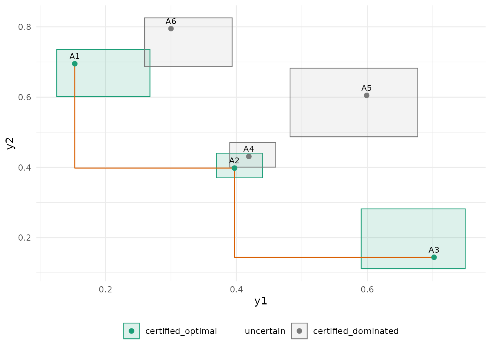

The problem
A finite set of alternatives (algorithm variants, designs, policies) is evaluated on several objectives through noisy simulation. With two objectives, an alternative is dominated when another is at least as good on both, and the Pareto frontier is the set of non-dominated alternatives. With noise, an alternative can look dominated purely by sampling error, and a frontier read off point estimates after a fixed number of runs carries no guarantee.
paretoinfer treats the identification as a sequential
experiment. It keeps one anytime-valid confidence sequence per
alternative and objective (from the seqbench
package), shares the error level alpha among them, and at
any time reports three sets:
- the estimated frontier, a point estimate;
- the plausible Pareto set, the alternatives that cannot be certified as dominated, with the subset that is certified optimal;
- the certified dominated alternatives, each with the alternative that dominates it.
With probability at least 1 - alpha, every certificate
ever issued is true, whatever the stopping rule and whatever is
evaluated next. Dominance is epsilon-dominance: j
dominates k when it is at least as good as k
up to a tolerance epsilon on every objective. A positive
tolerance is what lets the procedure stop on near-ties.
A simulated problem
Six alternatives with two objectives in [0, 1], both minimised. Three are on the true frontier, one is nearly tied with a frontier alternative, two are clearly dominated. Noise is uniform with half-width 0.1.
Design, run, read
design <- pareto_design(alternatives = rownames(means), objectives = c("y1", "y2"),
bounds = c(0, 1), alpha = 0.05, epsilon = 0.05,
max_evaluations = 3000)
design
#>
#> ── Pareto identification design ────────────────────────────────────────────────
#> 6 alternatives, 2 objectives (y1 and y2), all minimised.
#> Bounds: y1 in [0, 1]; y2 in [0, 1].
#> Tolerance epsilon: 0.05, 0.05; alpha 0.05 shared over 12 confidence sequences
#> (0.00417 each); boundary "betting".
#> Budget: no cost limit; 3000 evaluations at most.
set.seed(1)
state <- pareto_run(design, simulate, batch = 5, initial = 5)
state
#>
#> ── Pareto identification ───────────────────────────────────────────────────────
#> 6 alternatives, 2 objectives, alpha 0.05, epsilon 0.05, 0.05.
#> 645 evaluations, cost 645.
#> • Estimated frontier: "A1", "A2", and "A3"
#> • Plausible Pareto set: "A1", "A2", and "A3" (certified optimal: A1, A2, A3)
#> • Certified dominated: A4, A5, A6
#> ℹ Stopped: identified.The procedure evaluated every alternative five times, then repeatedly chose the most uncertain plausible alternative per unit cost, evaluated it five more times and updated, until every alternative was certified or the budget ran out.
sets <- plausible_pareto_set(state)
sets$table
#> # A tibble: 6 × 7
#> alternative status on_estimated_frontier dominated_by n_evaluations cost
#> <chr> <chr> <lgl> <chr> <int> <dbl>
#> 1 A1 certified_… TRUE NA 85 85
#> 2 A2 certified_… TRUE NA 175 175
#> 3 A3 certified_… TRUE NA 70 70
#> 4 A4 certified_… FALSE A2 175 175
#> 5 A5 certified_… FALSE A2 55 55
#> 6 A6 certified_… FALSE A1 85 85
#> # ℹ 1 more variable: cs_empty <lgl>A4 sits within epsilon = 0.05 of
A2 on both objectives, so it is certified dominated by
A2 under the tolerance; with epsilon = 0 the
two could not be separated and the procedure would run to its
budget.
The picture is the guarantee
autoplot() draws, for each alternative, the product of
its two running intersections: a box that contains the true mean vector
with the simultaneous guarantee. The boxes are what the certificates are
read from; the step line is the estimated frontier, a point
estimate.
autoplot(state)
Step by step
The same identification can be driven by hand, for example when evaluations come from an external simulator or a cluster.
state <- initialize_pareto(design)
set.seed(2)
for (k in design$alternatives) {
ev <- simulate(k, 5); ev$alternative <- k
state <- update_objectives(state, ev)
}
choose_next_evaluation(state, n = 3)
#> # A tibble: 3 × 4
#> alternative score width n_evaluations
#> <chr> <dbl> <dbl> <int>
#> 1 A5 0.898 0.898 5
#> 2 A2 0.896 0.896 5
#> 3 A4 0.887 0.887 5choose_next_evaluation() scores uncertain alternatives
by the width of their confidence box per unit cost and never proposes a
certified one. The rule is a heuristic; the validity of the certificates
does not depend on it.
The report
pareto_report(state)
#>
#> ── Pareto identification report ────────────────────────────────────────────────
#> 6 alternatives, objectives y1 and y2, epsilon 0.05, 0.05, alpha 0.05, boundary
#> "betting".
#> 30 evaluations, cost 30; running.
#>
#> ── Pareto sets ──
#>
#> • Estimated frontier: "A1", "A2", and "A3"
#> • Plausible: "A1", "A2", "A3", "A4", "A5", and "A6"
#> • Certified optimal: none
#> • Uncertain: A1, A2, A3, A4, A5, A6
#> • Certified dominated: none
#>
#> ── Assumptions ──
#>
#> • Every objective value lies in its declared bounds; conditionally on the past,
#> each evaluation of an alternative has the alternative's mean objective vector
#> (fresh draws, any dependence between objectives).
#> • The 12 confidence sequences share alpha = 0.05 by a union bound (0.00417
#> each); with probability at least 0.95 all true means lie in their running
#> intersections at every time, and every certificate below is then true.
#> • Dominance is epsilon-dominance with epsilon = (0.05, 0.05): j dominates k
#> when mu[j] <= mu[k] + epsilon in every objective.
#> • Certified optimal means not epsilon-dominated by any other plausible
#> alternative; epsilon-ties keep their earliest member in design order.
#> • The estimated frontier is a point estimate without a certificate; the
#> plausible set and the certified sets carry the guarantee.
#> paretoinfer 0.1.0, seqbench 0.1.0, R version 4.6.1 (2026-06-24)
glance(state)
#> # A tibble: 1 × 12
#> K m alpha n_evaluations total_cost n_frontier n_plausible
#> <int> <int> <dbl> <int> <dbl> <int> <int>
#> 1 6 2 0.05 30 30 3 6
#> # ℹ 5 more variables: n_certified_optimal <int>, n_uncertain <int>,
#> # n_dominated <int>, identified <lgl>, stopping_reason <chr>What the guarantee is and is not
- It is a statement about certificates: certified dominated
alternatives are truly
epsilon-dominated and certified optimal ones are truly not, all simultaneously, with probability at least1 - alpha, at every time. - It is not a statement about the estimated frontier, which is a point estimate, nor about the plausible set being small: with few evaluations the plausible set is everything.
- It needs the objectives of each evaluation to lie in the declared bounds and to have, conditionally on the past, the alternative’s mean. Dependence between the objectives of one evaluation is allowed; so is any adaptive choice of what to evaluate next.
- The level is shared by a union bound over the
K * mconfidence sequences, which is conservative; the price is evaluations, not validity.